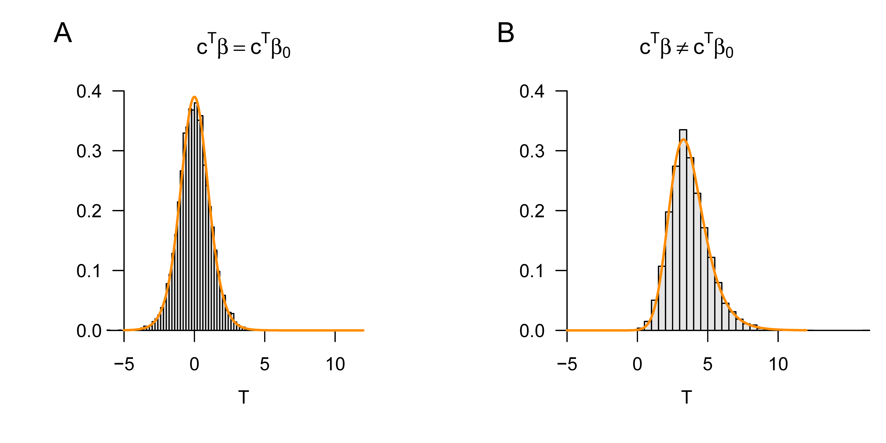
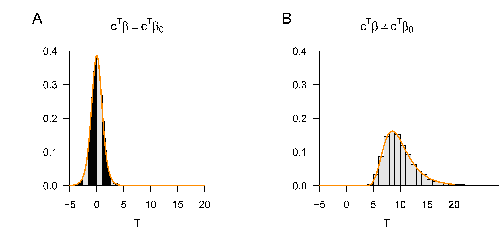
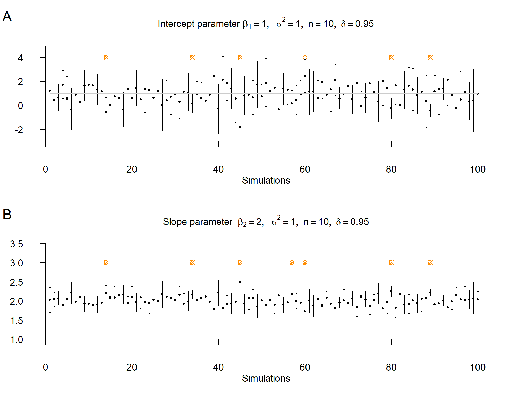

# libraries
library(MASS) # multivariate normal distribution
# model formulation
n = 12 # number of data points
p = 1 # number of beta parameters
X = matrix(c(rep(1,n)), nrow = n) # design matrix
I_n = diag(n) # identity matrix
beta = c(0,1) # true, but unknown, beta parameters
nscn = length(beta) # number of true, but unknown, hypothesis scenarios
sigsqr = 1 # true, but unknown, variance parameter
c = 1 # contrast vector of interest
beta_0 = 0 # null-hypothesis beta parameter
# frequentist simulation
nsim = 1e4 # number of simulations
delta = rep(NaN, nscn) # noncentrality-parameter array
Tee = matrix(rep(NaN, nscn*nsim), ncol = nscn) # T-test-statistic realization array
for(s in 1:nscn){ # hypothesis scenarios
delta[s] = ((t(c) %*% beta[s] - t(c) %*% beta_0)/ # noncentrality parameter
sqrt(sigsqr*t(c)%*%solve(t(X)%*%X)%*%c))
for(i in 1:nsim){ # simulation iterations
y = mvrnorm(1, X %*% beta[s], sigsqr*I_n) # y
beta_hat = solve(t(X) %*% X) %*% t(X) %*% y # \hat{\beta}
eps_hat = y - X %*% beta_hat # \hat{\eps}
sigsqr_hat = (t(eps_hat) %*% eps_hat)/(n-p) # \hat{\sigma}^2
Tee[i,s] = ((t(c) %*% beta_hat - t(c) %*% beta_0)/ # T
sqrt(sigsqr_hat*t(c)%*%solve(t(X)%*%X)%*%c))
}
}38 T-statistics
In this section, we introduce T-statistics as measures for evaluating beta-parameter estimators in the GLM. T-statistics quantify the estimated effects of the beta-parameter estimator relative to the residual variability estimated by the variance-parameter estimator. The value of a T-statistic can therefore initially be understood simply as a signal-to-noise ratio.
T-statistics also allow the evaluation of linear combinations of the components of the beta-parameter estimator in terms of frequentist confidence intervals and hypothesis tests. Here, we first consider only the functional form of T-statistics and their frequentist distribution for the purpose of determining confidence intervals. The use of T-test statistics in one-sample and two-sample T-tests is the topic of ?sec-t-tests.
38.1 Definition and examples
Against the background of the GLM and its parameter point estimators, we define the T-statistic as follows.
Definition 38.1 (T-statistic) Let \[\begin{equation} y = X \beta+\varepsilon \mbox{ with } \varepsilon \sim N\left(0_{n}, \sigma^{2} I_{n}\right) \end{equation}\] be the GLM. Furthermore, let \[\begin{equation} \hat{\beta}:=\left(X^{T} X\right)^{-1}X^{T}y \mbox{ and } \hat{\sigma}^{2}:=\frac{(y-X\hat{\beta})^{T}(y-X\hat{\beta})}{n-p} \end{equation}\] be the beta-parameter and variance-parameter estimators, respectively. Then, for a contrast-weight vector \(c \in \mathbb{R}^{p}\) and a parameter \(\beta_{0} \in \mathbb{R}^{p}\), the T-statistic is defined as \[\begin{equation} T:=\frac{c^{T} \hat{\beta}-c^{T} \beta_{0}}{\sqrt{\hat{\sigma}^{2} c^{T}\left(X^{T} X\right)^{-1} c}} . \end{equation}\]
Suitable choices of the contrast-weight vector \(c \in \mathbb{R}^{p}\) and the parameter \(\beta_{0} \in \mathbb{R}^{p}\) allow a wide range of uses of the T-statistic. Let us first consider the contrast-weight vector. Evidently, the contrast-weight vector serves to transform the random vector \(\hat{\beta} \in \mathbb{R}^{p}\) into the random variable \(c^{T}\hat{\beta}\) and thereby ensures that the T-statistic is scalar. Furthermore, choosing \(p\)-dimensional unit vectors for the contrast-weight vector allows the selection of individual components of the beta parameter for evaluation using the T-statistic. Finally, a general choice of the contrast-weight vector allows the evaluation of arbitrary linear combinations of the beta-parameter components, such as differences of individual components. As examples, for \(\hat{\beta} \in \mathbb{R}^{2}\) the following possibilities for choosing \(c \in \mathbb{R}^{2}\) with respect to the scalar product \(c^{T}\hat{\beta}\) are: \[\begin{equation} c:= \begin{pmatrix} 1 \\ 0 \end{pmatrix} \Rightarrow c^{T}\hat{\beta} = \hat{\beta}_{1}, \quad c := \begin{pmatrix} 0 \\ 1 \end{pmatrix} \Rightarrow c^{T}\hat{\beta} = \hat{\beta}_{2}, \quad c :=\begin{pmatrix} 1 \\ -1 \end{pmatrix} \Rightarrow c^{T}\hat{\beta} = \hat{\beta}_{1} - \hat{\beta}_{2}. \end{equation}\] The choice of the parameter \(\beta_{0} \in \mathbb{R}^{p}\) opens up different ways of using the T-statistic. If, for example, one chooses \(\beta_{0}:=0_{p}\), then the T-statistic is a descriptive statistic that makes it possible to relate estimated regressor effects, that is, components or linear combinations of \(\hat{\beta}\), as a signal-to-noise ratio to the residual data variability quantified by \(\hat{\sigma}^{2}\). The denominator of the T-statistic ensures that, in particular, the appropriate (co)standard deviation of the corresponding beta-parameter component combination serves as the reference quantity, because \(\hat{\sigma}^{2}\left(X^{T} X\right)^{-1}\) is, as is well known, the covariance of the beta-parameter estimator (cf. Theorem 37.3).
If, by contrast, one chooses \(\beta_{0}\) as \(\beta\), that is, the true, but unknown, beta-parameter value, then the T-statistic opens up the possibility of determining confidence intervals for individual components of the beta-parameter vector. We deepen this aspect of the T-statistic in Section 38.2. Finally, if \(\beta_{0}\) is declared as the element of a null hypothesis in the context of a test scenario, then the T-statistic opens up hypothesis-test-based inference about beta-parameter components and their linear combinations. We discuss applications of this type in detail in ?sec-t-tests.
The use of the T-statistic for frequentist inference in terms of confidence intervals and hypothesis tests is, of course, based on the frequentist distribution of the T-statistic against the background of the GLM. This is the central content of the following theorem, whose proof we omit.
Theorem 38.1 (Frequentist distribution of the T-statistic) Let \[\begin{equation} y = X \beta+\varepsilon \mbox{ with } \varepsilon \sim N\left(0_{n}, \sigma^{2} I_{n}\right) \end{equation}\] be the GLM. Furthermore, let \[\begin{equation} \hat{\beta} := \left(X^{T} X\right)^{-1}X^{T}y \mbox{ and } \hat{\sigma}^{2}:=\frac{(y-X\hat{\beta})^{T}(y-X\hat{\beta})}{n-p} \end{equation}\] be the beta-parameter and variance-parameter estimators, respectively. Finally, for a contrast-weight vector \(c \in \mathbb{R}^{p}\) and a parameter \(\beta_{0} \in \mathbb{R}^{p}\), let \[\begin{equation} T := \frac{c^{T}\hat{\beta} - c^{T}\beta_{0}}{\sqrt{\hat{\sigma}^{2} c^{T}\left(X^{T} X\right)^{-1} c}} \end{equation}\] be the T-statistic. Then \[\begin{equation} T \sim t(\delta, n-p) \mbox{ with } \delta:=\frac{c^{T} \beta-c^{T} \beta_{0}}{\sqrt{\sigma^{2} c^{T}\left(X^{T} X\right)^{-1} c}} . \end{equation}\]
In general, the T-statistic is therefore noncentrally t-distributed. If, as in the determination of confidence intervals (cf. Section 38.2), \(\beta_{0}:=\beta\), or if, in a test scenario, \(\beta := \beta_{0}\) holds when the null hypothesis is true (cf. ?sec-t-tests), then the T-statistic is even \(t\)-distributed, each time with degrees-of-freedom parameter \(n-p\). If, by contrast, the null hypothesis is not true in a test scenario, then the distribution of the T-statistic from Theorem 38.1 can be used to derive the power function and thus to determine the power of the test (cf. Chapter ?sec-t-tests). We will deepen these aspects in the appropriate place. Here, we first want to illustrate the T-statistic and its distribution only using the examples of independent identically normally distributed random variables and simple linear regression.
Example (1) Independent and identically normally distributed random variables
Let \[\begin{equation} y \sim N\left(X \beta, \sigma^{2} I_{n}\right) \mbox{ with } X := 1_{n} \in \mathbb{R}^{n \times 1}, \beta:=\mu \in \mathbb{R} \mbox{ and } \sigma^{2}>0 \end{equation}\] be the GLM scenario of independent and identically normally distributed random variables, and let \(c:=1\) and \(\beta_{0}:=\mu_{0} \in \mathbb{R}\). Then, for the T-statistic, \[\begin{equation} T = \frac{c^{T} \hat{\beta}-c^{T} \mu_{0}}{\sqrt{\hat{\sigma}^{2} c^{T}\left(X^{T} X\right)^{-1} c}} = \frac{1^{T} \bar{y}-1^{T} \mu_{0}}{\sqrt{s_{y}^{2} 1^{T}\left(1_{n}^{T} 1_{n}\right)^{-1} 1}} = \sqrt{n}\left(\frac{\bar{y}-\mu_{0}}{s_{y}}\right). \end{equation}\] This evidently corresponds to the familiar one-sample T-test statistic (cf. Chapter 33). Like that statistic, the T-statistic considered here takes large absolute values, with the respective complementary terms held constant, for a large absolute difference \(\bar{y}-\mu_{0}\) (often called an effect), for small values of \(s_{y}^{2}\) (that is, low data variability), and for a large value of \(n\) (that is, a large sample size). The following R code simulates the frequentist distribution of this T-statistic for the cases \(\beta=\beta_{0}\) and \(\beta \neq \beta_{0}\).
Figure 38.1 A and B show the resulting simulated and analytical distributions of the T-statistic.

Example (2) Simple linear regression
In this example, we do not want to discuss the specific form of the T-statistic but rather demonstrate, by means of a simulation, how the principle of the T-statistic appears in the context of simple linear regression. To this end, we consider the familiar example model of simple linear regression (cf. Chapter 36), here with the true, but unknown, parameter values \(\beta_{A}:=(1,0)\) and \(\beta_{B}:=(1,1)\). Furthermore, we consider the contrast-weight vector \(c:=(0,1)\), so that the T-statistic can be used to evaluate the slope parameter of the simple linear regression. Finally, in both cases we consider the parameter \(\beta_{0}:=(0,0)^{T}\), so that in the case of \(\beta_{A}\), \(c^{T} \beta=c^{T} \beta_{0}\) holds, and in the case of \(\beta_{B}\), \(c^{T} \beta \neq c^{T} \beta_{0}\) holds. The following R code implements the outlined scenarios; Figure 38.2 A and B show the resulting simulated and analytical distributions of the T-statistic.
# model formulation
library(MASS) # multivariate normal distribution
n = 10 # number of data points
p = 2 # number of beta parameters
x = 1:n # predictor values
X = matrix(c(rep(1,n),x), ncol = p) # design matrix
I_n = diag(n) # identity matrix
beta = matrix(c(1,0,1,1), nrow = 2) # true, but unknown, beta parameters
nscn = ncol(beta) # number of true, but unknown, hypothesis scenarios
sigsqr = 1 # true, but unknown, variance parameter
c = matrix(c(0,1), nrow = 2) # contrast vector of interest
beta_0 = matrix(c(0,0), nrow = 2) # null-hypothesis beta parameter
# frequentist simulation
nsim = 1e4 # number of simulations
delta = rep(NaN, nscn) # noncentrality-parameter array
Tee = matrix(rep(NaN, nscn*nsim), ncol = nscn) # T-test-statistic realization array
for(s in 1:nscn){ # hypothesis scenarios
delta[s] = ((t(c) %*% beta[,s] - t(c) %*% beta_0)/ # noncentrality parameter
sqrt(sigsqr*t(c)%*%solve(t(X)%*%X)%*%c))
for(i in 1:nsim){ # simulation iterations
y = mvrnorm(1, X %*% beta[,s], sigsqr*I_n) # y
beta_hat = solve(t(X) %*% X) %*% t(X) %*% y # \hat{\beta}
eps_hat = y - X %*% beta_hat # \hat{\eps}
sigsqr_hat = (t(eps_hat) %*% eps_hat)/(n-p) # \hat{\sigma}^2
Tee[i,s] = ((t(c) %*% beta_hat - t(c) %*% beta_0)/ # T
sqrt(sigsqr_hat*t(c)%*%solve(t(X)%*%X)%*%c))
}
}
38.2 Confidence intervals for beta-parameter components
Using the T-statistic, confidence intervals for the components of the beta-parameter vector can be determined. The following theorem is the central statement of this section.
Theorem 38.2 (Confidence intervals for beta-parameter components) Let \[\begin{equation} y = X \beta+\varepsilon \mbox{ with } \varepsilon \sim N\left(0_{n}, \sigma^{2} I_{n}\right) \end{equation}\] be the GLM, let \[\begin{equation} \hat{\beta}:=\left(X^{T} X\right)^{-1}X^{T}y \mbox{ and } \hat{\sigma}^{2}:=\frac{(y-X\hat{\beta})^{T}(y-X\hat{\beta})}{n-p} \end{equation}\] be the beta-parameter and variance-parameter estimators, respectively, and, for \(\delta \in] 0,1[\), let \[\begin{equation} t_{\delta}:=\Psi^{-1}\left(\frac{1+\delta}{2}; n-p\right). \end{equation}\] Finally, for \(j=1, \ldots, p\), let \[\begin{equation} \lambda_{j}:=\left(\left(X^{T} X\right)^{-1}\right)_{j j} \mbox{ be the $j$th diagonal element of } \left(X^{T} X\right)^{-1}. \end{equation}\] Then, for \(j=1, \ldots, p\), \[\begin{equation} \kappa_{j} := \left[ \hat{\beta}_{j}-\hat{\sigma} \sqrt{\lambda_{j}} t_{\delta}, \hat{\beta}_{j}+\hat{\sigma} \sqrt{\lambda_{j}} t_{\delta} \right] \end{equation}\] is a \(\delta\) confidence interval for the \(j\)th component \(\beta_{j}\) of the beta parameter \(\beta=\left(\beta_{1}, \ldots, \beta_{p}\right)^{T}\).
Proof. We have to show that \[\begin{equation} \mathbb{P}\left(\kappa_{j} \ni \beta_{j}\right) = \delta. \end{equation}\] To this end, we first note that, for all \(j=1, \ldots, p\), when choosing \(\beta_{0}=\beta\) and \(c:=e_{j}\), Theorem 38.1 implies \[\begin{equation} T = \frac{e_{j}^{T} \hat{\beta}-e_{j}^{T} \beta}{\sqrt{\hat{\sigma}^{2} e_{j}^{T}\left(X^{T} X\right)^{-1} e_{j}}} = \frac{\hat{\beta}_{j}-\beta_{j}}{\sqrt{\hat{\sigma}^{2}\left(\left(X^{T} X\right)^{-1}\right)_{j j}}} = \frac{\hat{\beta}_{j}-\beta_{j}}{\hat{\sigma}\sqrt{\lambda_{j}}} =: T_{j} \end{equation}\] and \[\begin{equation} \frac{e_{j}^{T} \beta-e_{j}^{T} \beta}{\sqrt{\sigma^{2} e_{j}^{T}\left(X^{T} X\right)^{-1} e_{j}}} = 0. \end{equation}\] Thus \(T_{j} \sim t(n-p)\). Furthermore, we recall (cf. Chapter 32) that, by definition of \(t_{\delta}\), \[\begin{equation} \mathbb{P}\left(-t_{\delta} \leq T_{j} \leq t_{\delta}\right)=\delta. \end{equation}\] From the definition of a \(\delta\) confidence interval, it follows that \[\begin{equation} \begin{aligned} \delta & = \mathbb{P}\left(-t_{\delta} \leq T_{j} \leq t_{\delta}\right) \\ & = \mathbb{P}\left(-t_{\delta} \leq \frac{\hat{\beta}_{j}-\beta_{j}}{\hat{\sigma} \sqrt{\lambda_{j}}} \leq t_{\delta}\right) \\ & = \mathbb{P}\left(-t_{\delta} \hat{\sigma} \sqrt{\lambda_{j}} \leq \hat{\beta}_{j}-\beta_{j} \leq t_{\delta} \hat{\sigma} \sqrt{\lambda_{j}}\right) \\ & = \mathbb{P}\left(-\hat{\beta}_{j}-t_{\delta} \hat{\sigma} \sqrt{\lambda_{j}} \leq-\beta_{j} \leq-\hat{\beta}_{j}+t_{\delta} \hat{\sigma} \sqrt{\lambda_{j}}\right) \\ & =\mathbb{P}\left(\hat{\beta}_{j}+t_{\delta} \hat{\sigma} \sqrt{\lambda_{j}} \geq \beta_{j} \geq \hat{\beta}_{j}-t_{\delta} \hat{\sigma} \sqrt{\lambda_{j}}\right) \\ & =\mathbb{P}\left(\hat{\beta}_{j}-t_{\delta} \hat{\sigma} \sqrt{\lambda_{j}} \leq \beta_{j} \leq \hat{\beta}_{j}+t_{\delta} \hat{\sigma} \sqrt{\lambda_{j}}\right) \\ & =\mathbb{P}\left(\left[\hat{\beta}_{j}-\hat{\sigma} \sqrt{\lambda_{j}} t_{\delta}, \hat{\beta}_{j}+\hat{\sigma} \sqrt{\lambda_{j}} t_{\delta}\right] \ni \beta_{j}\right) \\ & =\mathbb{P}\left(\kappa_{j} \ni \beta_{j}\right) \end{aligned} \end{equation}\] and the claim is proved.
Example (1) Independent and identically normally distributed random variables
As usual, we first consider the GLM form of the scenario of independent and identically normally distributed random variables \[\begin{equation} y \sim N\left(X \beta, \sigma^{2} I_{n}\right) \mbox{ with } X := 1_{n} \in \mathbb{R}^{n}, \beta:=\mu \in \mathbb{R}, \sigma^{2}>0. \end{equation}\] Then, as already seen, \[\begin{equation} \hat{\beta} = \frac{1}{n} \sum_{i=1}^{n} y_{i} =: \bar{y}, \hat{\sigma}^{2}=\frac{1}{n-1} \sum_{i=1}^{n}\left(y_{i}-\bar{y}\right)^{2}=: s_{y}^{2} \mbox{ and } \lambda_{1}=\left(1_{n}^{T} 1_{n}\right)^{-1}=\frac{1}{n}. \end{equation}\] By Theorem 38.2, it follows that \[\begin{equation} \kappa:=\left[\bar{y}-\frac{s_y}{\sqrt{n}} t_{\delta}, \bar{y}+\frac{s_y}{\sqrt{n}} t_{\delta}\right] \end{equation}\] is a \(\delta\) confidence interval for \(\beta\), and this is evidently identical to the familiar \(\delta\) confidence interval for the expectation parameter of the normal distribution.
Example (2) Simple linear regression
In this example, we do not want to discuss the specific form of the confidence intervals for the intercept and slope parameters, but merely use the following simulation to recall the frequentist meaning of a \(\delta\) confidence interval: realizations of \(\delta\) confidence intervals cover the true, but unknown, parameter value with frequentist probability \(\delta\). Based on the following R code, Figure 38.3 shows that, in the concrete simulation with \(\delta=0.95\), this is the case in 94 of 100 cases for the intercept parameter and in 93 of 100 cases for the slope parameter.
# model formulation
library(MASS) # multivariate normal distribution
set.seed(0) # random number generator seed
ns = 1e2 # number of simulations
n = 10 # number of data points
p = 2 # number of beta parameters
x = 1:n # predictor values
X = matrix(c(rep(1,n),x), ncol = p) # design matrix
I_n = diag(n) # identity matrix
beta = matrix(c(1,2), nrow = 2) # true, but unknown, beta parameters
sigsqr = 1 # true, but unknown, variance parameter
delta = 0.95 # confidence level
t_delta = qt((1+delta)/2,n-p) # \Psi^{-1}((1+\delta)/2,n-p)
lambda = diag(solve(t(X) %*% X)) # \lambda_j values
# simulation
kappa = array(rep(NaN, ns*p*p), dim=c(ns,2,2)) # confidence-interval array
beta_hat = matrix(rep(NaN,p*ns), nrow = p) # beta-parameter estimator
for(i in 1:ns){ # iteration over realizations
y = mvrnorm(1, X %*% beta, sigsqr*I_n) # data realization
beta_hat[,i] = solve(t(X) %*% X) %*% t(X) %*% y # \hat{\beta}
eps_hat = y - X %*% beta_hat[,i] # \hat{\varepsilon}
sigsqr_hat = (t(eps_hat) %*% eps_hat)/(n-p) # \hat{\sigma}^2
for(j in 1:p){ # iteration over beta-array components
kappa[i,1,j] = beta_hat[j,i]-sqrt(sigsqr_hat*lambda[j])*t_delta # lower CI bound
kappa[i,2,j] = beta_hat[j,i]+sqrt(sigsqr_hat*lambda[j])*t_delta # upper CI bound
}
}
38.3 Bibliographic remarks
Box (1981) and Zabell (2008) give a historical overview of the development of the T-statistic and its distribution in the context of the work of Student (1908) and Fisher (1925c), Fisher (1925b), and Fisher (1925a). The theory of confidence intervals goes back to Neyman (1935) and Neyman (1937).
Box, J. F. (1981). Gosset, Fisher, and the t Distribution. The American Statistician, 35(2), 61. https://doi.org/10.2307/2683142
Fisher, R. A. (1925a). Applications of "Student’s" distribution. Metron, 5, 90–104.
Fisher, R. A. (1925b). Statistical Methods for Research Workers. Oliver & Boyd.
Fisher, R. A. (1925c). Theory of Statistical Estimation. Mathematical Proceedings of the Cambridge Philosophical Society, 22(5), 700–725. https://doi.org/10.1017/S0305004100009580
Neyman, J. (1935). On the Problem of Confidence Intervals. The Annals of Mathematical Statistics, 6(3), 111–116. https://doi.org/10.1214/aoms/1177732585
Neyman, J. (1937). Outline of a Theory of Statistical Estimation Based on the Classical Theory of Probability. Statistical Stimation.
Student. (1908). The Probable Error of a Mean. Biometrika, 6(1), 1–25.
Zabell, S. L. (2008). On Student’s 1908 Article “The Probable Error of a Mean.” Journal of the American Statistical Association, 103(481), 1–7. https://doi.org/10.1198/016214508000000030